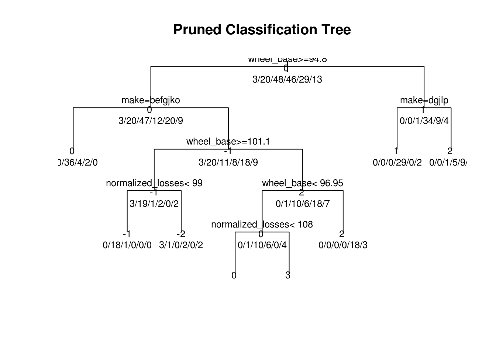

Chapter 5 Results
…
5.1 Random Forest
First we decided to use a random forest models to get a rough approximation of what input factors were important. Note that this type of analysis tends to favor factors with high numbers of levels. We did not try and correct for this as it is more of a starting point in understanding our dataset for use in the below models.
As can be seen from the plot, make, num_of_doors, and wheel_base all showed high relative importance to the symboling classification factor. The relative drop off in relative importance prompted us to limit our inquiry into just these three predictors for the next model.
5.2 Linear Regression
Armed with the relative factor importance, we first tried a few variations of simple linear regression models with factors that we thought would be important, such as:
makealone.num_of_doorsalone.makeandnum_of_doors.make,numofdoors, andwheelbase.- all variables included
##
## Call:
## lm(formula = symboling ~ make, data = training_data)
##
## Residuals:
## Min 1Q Median 3Q Max
## -2.000 -0.500 0.000 0.500 2.667
##
## Coefficients:
## Estimate Std. Error t value Pr(>|t|)
## (Intercept) 2.0000 0.9156 2.184 0.03260 *
## makedodge -1.0000 1.1214 -0.892 0.37585
## makehonda -1.5714 0.9788 -1.605 0.11331
## makemazda -1.5000 0.9889 -1.517 0.13425
## makemercedes-benz -1.6667 1.0572 -1.576 0.11985
## makemitsubishi -1.0000 1.0030 -0.997 0.32250
## makenissan -1.1818 0.9563 -1.236 0.22104
## makepeugot -2.0000 1.1214 -1.784 0.07924 .
## makeplymouth -1.0000 1.1214 -0.892 0.37585
## makeporsche 1.0000 1.2948 0.772 0.44278
## makesaab 0.5000 1.0237 0.488 0.62690
## makesubaru -1.2500 0.9711 -1.287 0.20267
## maketoyota -1.5000 0.9438 -1.589 0.11690
## makevolkswagen 0.2000 1.0030 0.199 0.84258
## makevolvo -3.1667 0.9889 -3.202 0.00213 **
## ---
## Signif. codes: 0 '***' 0.001 '**' 0.01 '*' 0.05 '.' 0.1 ' ' 1
##
## Residual standard error: 0.9156 on 64 degrees of freedom
## Multiple R-squared: 0.5097, Adjusted R-squared: 0.4024
## F-statistic: 4.752 on 14 and 64 DF, p-value: 7.252e-06## [1] "RMSE: "##
## Call:
## lm(formula = symboling ~ num_of_doors, data = training_data)
##
## Residuals:
## Min 1Q Median 3Q Max
## -2.1064 -0.6562 -0.1064 0.3438 1.8936
##
## Coefficients:
## Estimate Std. Error t value Pr(>|t|)
## (Intercept) 0.1064 0.1327 0.802 0.425
## num_of_doorstwo 1.5499 0.2084 7.436 1.23e-10 ***
## ---
## Signif. codes: 0 '***' 0.001 '**' 0.01 '*' 0.05 '.' 0.1 ' ' 1
##
## Residual standard error: 0.9095 on 77 degrees of freedom
## Multiple R-squared: 0.4179, Adjusted R-squared: 0.4104
## F-statistic: 55.29 on 1 and 77 DF, p-value: 1.231e-10## [1] "RMSE: "##
## Call:
## lm(formula = symboling ~ make + num_of_doors, data = training_data)
##
## Residuals:
## Min 1Q Median 3Q Max
## -1.1757 -0.2767 0.0000 0.3496 1.7508
##
## Coefficients:
## Estimate Std. Error t value Pr(>|t|)
## (Intercept) 0.6261 0.6280 0.997 0.3225
## makedodge -0.3131 0.7500 -0.417 0.6778
## makehonda -0.9826 0.6546 -1.501 0.1383
## makemazda -0.5841 0.6658 -0.877 0.3837
## makemercedes-benz -0.7508 0.7108 -1.056 0.2949
## makemitsubishi -0.4505 0.6702 -0.672 0.5039
## makenissan -0.3075 0.6437 -0.478 0.6345
## makepeugot -0.6261 0.7615 -0.822 0.4141
## makeplymouth 0.3739 0.7615 0.491 0.6252
## makeporsche 1.0000 0.8616 1.161 0.2502
## makesaab 1.1869 0.6854 1.732 0.0882 .
## makesubaru -0.3913 0.6532 -0.599 0.5512
## maketoyota -0.8131 0.6326 -1.285 0.2034
## makevolkswagen 1.0243 0.6736 1.521 0.1334
## makevolvo -1.7928 0.6754 -2.654 0.0100 *
## num_of_doorstwo 1.3739 0.1521 9.030 5.75e-13 ***
## ---
## Signif. codes: 0 '***' 0.001 '**' 0.01 '*' 0.05 '.' 0.1 ' ' 1
##
## Residual standard error: 0.6093 on 63 degrees of freedom
## Multiple R-squared: 0.7863, Adjusted R-squared: 0.7354
## F-statistic: 15.45 on 15 and 63 DF, p-value: 1.037e-15## [1] "RMSE: "##
## Call:
## lm(formula = symboling ~ make + num_of_doors + wheel_base, data = training_data)
##
## Residuals:
## Min 1Q Median 3Q Max
## -1.14833 -0.21848 -0.00841 0.27748 1.15678
##
## Coefficients:
## Estimate Std. Error t value Pr(>|t|)
## (Intercept) 13.54499 2.45785 5.511 7.33e-07 ***
## makedodge 0.26155 0.63337 0.413 0.681067
## makehonda -0.15515 0.56613 -0.274 0.784960
## makemazda 0.38575 0.58280 0.662 0.510495
## makemercedes-benz 1.44589 0.71886 2.011 0.048639 *
## makemitsubishi 0.28776 0.57445 0.501 0.618191
## makenissan 0.61498 0.56253 1.093 0.278517
## makepeugot 1.79491 0.77739 2.309 0.024297 *
## makeplymouth 0.76996 0.63812 1.207 0.232166
## makeporsche 1.86682 0.73504 2.540 0.013614 *
## makesaab 2.52890 0.62265 4.062 0.000139 ***
## makesubaru 0.42819 0.56460 0.758 0.451095
## maketoyota 0.26424 0.56334 0.469 0.640676
## makevolkswagen 1.99522 0.58902 3.387 0.001230 **
## makevolvo 0.33694 0.68761 0.490 0.625856
## num_of_doorstwo 1.01682 0.14298 7.112 1.38e-09 ***
## wheel_base -0.14210 0.02642 -5.379 1.21e-06 ***
## ---
## Signif. codes: 0 '***' 0.001 '**' 0.01 '*' 0.05 '.' 0.1 ' ' 1
##
## Residual standard error: 0.5071 on 62 degrees of freedom
## Multiple R-squared: 0.8543, Adjusted R-squared: 0.8167
## F-statistic: 22.72 on 16 and 62 DF, p-value: < 2.2e-16## [1] "RMSE: "5.3 Regression Tree

…
Lift Chart
…
Decile Chart
…
5.4 Classification Tree
Lift Chart
…
Decile Chart
…